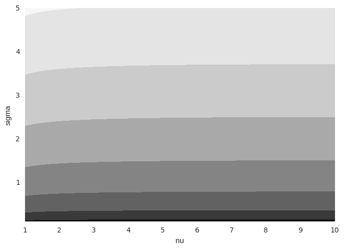
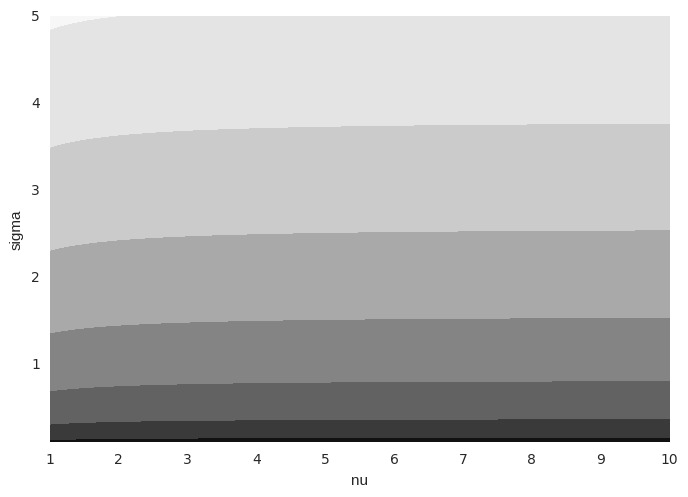
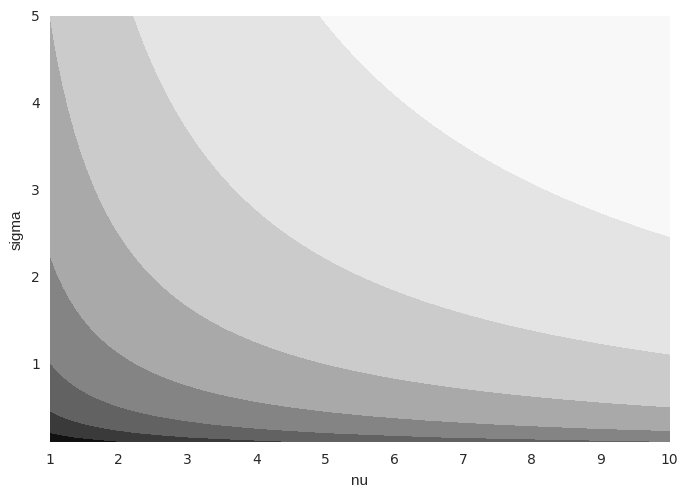
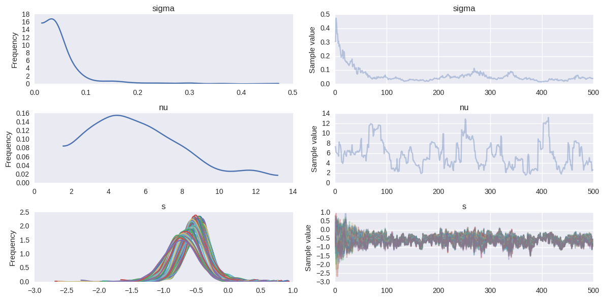
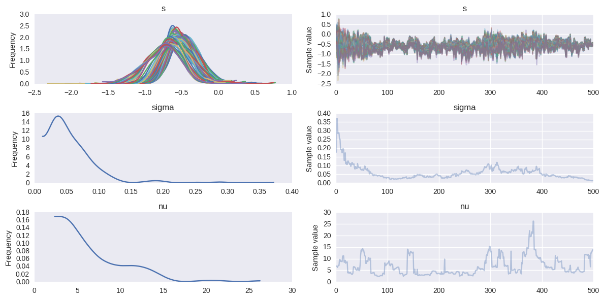

Code Profiling¶
Sometimes computing the likelihood is not as fast as we would like.
Theano provides handy profiling tools, which pymc3 provides a wrapper
model.profile which returns a ProfileStats object. Here we’ll
profile the likelihood and gradient for the stochastic volatility
example.
First we build the model.
In [15]:
import pandas as pd
In [14]:
pd.Series([-.5, -1, .1, .9]).apply(np.sign)
Out[14]:
0 -1.0
1 -1.0
2 1.0
3 1.0
dtype: float64
In [29]:
import numpy as np
import pymc3 as pm
from pymc3.math import exp
from pymc3.distributions.timeseries import *
import seaborn as sns
import matplotlib.pyplot as plt
n = 100
returns = np.genfromtxt('../../../pymc3/examples/data/SP500.csv')[-n:].astype('float32') * 100# get_data_file('pymc3.examples', "data/SP500.csv"))[-n:]
with pm.Model() as model_trans:
sigma = pm.Exponential('sigma', 1. / .02, testval=None)#, transform=None)
print(sigma.tag.test_value)
nu = pm.Exponential('nu', 1. / 10)#, transform=None)
s = GaussianRandomWalk('s', sigma ** -2, shape=n)
try:
r = pm.StudentT('r', nu, lam=exp(-2 * s), observed=returns)
except AttributeError:
r = pm.T('r', nu, lam=exp(-2 * s), observed=returns)
print(model_trans.test_point)
#trace_trans = pm.sample(500, pm.NUTS())
#print(pm.find_MAP(vars=['sigma_log', 'nu_log']))
with pm.Model() as model:
sigma = pm.Exponential('sigma', 1. / .02, testval=1., transform=None)
print(sigma.tag.test_value)
nu = pm.Exponential('nu', 1. / 10, transform=None)
s = GaussianRandomWalk('s', sigma ** -2, shape=n)
try:
r = pm.StudentT('r', nu, lam=exp(-2 * s), observed=returns)
except AttributeError:
r = pm.T('r', nu, lam=exp(-2 * s), observed=returns)
print(model.test_point)
#trace = pm.sample(500, pm.NUTS())
#print(pm.find_MAP(vars=[sigma, nu]))
0.013862944763407844
{'sigma_log_': array(-4.278535842895508), 'nu_log_': array(1.9360721111297607), 's': array([ 0., 0., 0., 0., 0., 0., 0., 0., 0., 0., 0., 0., 0.,
0., 0., 0., 0., 0., 0., 0., 0., 0., 0., 0., 0., 0.,
0., 0., 0., 0., 0., 0., 0., 0., 0., 0., 0., 0., 0.,
0., 0., 0., 0., 0., 0., 0., 0., 0., 0., 0., 0., 0.,
0., 0., 0., 0., 0., 0., 0., 0., 0., 0., 0., 0., 0.,
0., 0., 0., 0., 0., 0., 0., 0., 0., 0., 0., 0., 0.,
0., 0., 0., 0., 0., 0., 0., 0., 0., 0., 0., 0., 0.,
0., 0., 0., 0., 0., 0., 0., 0., 0.])}
1.0
{'nu': array(6.931471824645996), 'sigma': array(1.0), 's': array([ 0., 0., 0., 0., 0., 0., 0., 0., 0., 0., 0., 0., 0.,
0., 0., 0., 0., 0., 0., 0., 0., 0., 0., 0., 0., 0.,
0., 0., 0., 0., 0., 0., 0., 0., 0., 0., 0., 0., 0.,
0., 0., 0., 0., 0., 0., 0., 0., 0., 0., 0., 0., 0.,
0., 0., 0., 0., 0., 0., 0., 0., 0., 0., 0., 0., 0.,
0., 0., 0., 0., 0., 0., 0., 0., 0., 0., 0., 0., 0.,
0., 0., 0., 0., 0., 0., 0., 0., 0., 0., 0., 0., 0.,
0., 0., 0., 0., 0., 0., 0., 0., 0.])}
In [27]:
np.log(1.9360721111297607)
Out[27]:
6.9314713808207093
In [139]:
with model_trans:
print(pm.find_MAP(vars=[sigma, nu]))
with model:
print(pm.find_MAP(varnames=['sigma', 'nu']))
---------------------------------------------------------------------------
ValueError Traceback (most recent call last)
<ipython-input-139-b5b77856d7ca> in <module>()
1 with model_trans:
----> 2 print(pm.find_MAP(vars=[sigma, nu]))
3 with model:
4 print(pm.find_MAP(varnames=['sigma', 'nu']))
/home/wiecki/working/projects/pymc/pymc3/tuning/starting.py in find_MAP(start, vars, fmin, return_raw, disp, model, *args, **kwargs)
61 except AttributeError:
62 gradient_avail = False
---> 63
64 if disc_vars or not gradient_avail :
65 pm._log.warning("Warning: gradient not available." +
/home/wiecki/working/projects/pymc/pymc3/tuning/starting.py in allinmodel(vars, model)
149 "1) you don't have hierarchical parameters, " +
150 "these will lead to points with infinite " +
--> 151 "density. 2) your distribution logp's are " +
152 "properly specified. Specific issues: \n" +
153 specific_errors)
ValueError: Some variables not in the model: [sigma, nu]
In [109]:
x = np.mgrid[1:10:100j, 0.1:5:100j]
In [132]:
@np.vectorize
def logp_model_trans(x, y):
pt = copy(model_trans.test_point)
pt['nu_log'] = np.array(np.log(x))
pt['sigma_log'] = np.array(np.log(y))
return model_trans.fastlogp(pt)
logp_trans = logp_model_trans(x[0,...], x[1,...])
In [133]:
logp
Out[133]:
array([[ 19.01167771, -23.2702197 , -54.05812122, ..., -606.34944291,
-609.8189696 , -613.27859983],
[ 20.63480736, -21.64709005, -52.43499157, ..., -604.72631326,
-608.19583994, -611.65547017],
[ 22.04256362, -20.23933379, -51.02723531, ..., -603.318557 ,
-606.78808368, -610.24771391],
...,
[ 38.16964229, -4.11225512, -34.90015664, ..., -587.19147833,
-590.66100502, -594.12063525],
[ 38.18379691, -4.09810051, -34.88600203, ..., -587.17732372,
-590.6468504 , -594.10648063],
[ 38.19753094, -4.08436648, -34.872268 , ..., -587.16358969,
-590.63311637, -594.0927466 ]])
In [135]:
logp_trans - logp
Out[135]:
array([[ -2.30258509e+00, -1.90049267e+00, -1.61450121e+00, ...,
1.58944133e+00, 1.59948960e+00, 1.60943791e+00],
[ -2.21557372e+00, -1.81348129e+00, -1.52748984e+00, ...,
1.67645270e+00, 1.68650098e+00, 1.69644929e+00],
[ -2.13553101e+00, -1.73343858e+00, -1.44744713e+00, ...,
1.75649541e+00, 1.76654369e+00, 1.77649200e+00],
...,
[ -1.83491387e-02, 3.83743285e-01, 6.69734740e-01, ...,
3.87367728e+00, 3.88372556e+00, 3.89367387e+00],
[ -9.13248356e-03, 3.92959940e-01, 6.78951395e-01, ...,
3.88289394e+00, 3.89294221e+00, 3.90289052e+00],
[ -4.26325641e-14, 4.02092424e-01, 6.88083879e-01, ...,
3.89202642e+00, 3.90207469e+00, 3.91202301e+00]])
In [69]:
from copy import copy
In [122]:
@np.vectorize
def logp_model(x, y):
pt = copy(model.test_point)
pt['nu'] = np.array(x)
pt['sigma'] = np.array(y)
return model.fastdlogp(pt)
logp = logp_model(x[0,...], x[1,...])
In [136]:
plt.contourf(x[0,...], x[1,...], logp)
plt.xlabel('nu')
plt.ylabel('sigma')
plt.figure()
plt.contourf(x[0,...], x[1,...], logp_trans)
plt.xlabel('nu')
plt.ylabel('sigma')
plt.figure()
plt.contourf(x[0,...], x[1,...], logp-logp_trans)
plt.xlabel('nu')
plt.ylabel('sigma')
Out[136]:
<matplotlib.text.Text at 0x7fc1839644e0>



In [ ]:
In [34]:
model.logp(model.test_point)
Out[34]:
array(237.3316047117713)
In [26]:
model.test_point
Out[26]:
{'nu': array(6.931471824645996),
's': array([ 0., 0., 0., 0., 0., 0., 0., 0., 0., 0., 0., 0., 0.,
0., 0., 0., 0., 0., 0., 0., 0., 0., 0., 0., 0., 0.,
0., 0., 0., 0., 0., 0., 0., 0., 0., 0., 0., 0., 0.,
0., 0., 0., 0., 0., 0., 0., 0., 0., 0., 0., 0., 0.,
0., 0., 0., 0., 0., 0., 0., 0., 0., 0., 0., 0., 0.,
0., 0., 0., 0., 0., 0., 0., 0., 0., 0., 0., 0., 0.,
0., 0., 0., 0., 0., 0., 0., 0., 0., 0., 0., 0., 0.,
0., 0., 0., 0., 0., 0., 0., 0., 0.]),
'sigma': array(0.013862943276762962)}
Then call profile and summarize it.
In [17]:
with model:
start = pm.find_MAP()
print(start)
{'nu': array(6.931471824645996), 's': array([ 0., 0., 0., 0., 0., 0., 0., 0., 0., 0., 0., 0., 0.,
0., 0., 0., 0., 0., 0., 0., 0., 0., 0., 0., 0., 0.,
0., 0., 0., 0., 0., 0., 0., 0., 0., 0., 0., 0., 0.,
0., 0., 0., 0., 0., 0., 0., 0., 0., 0., 0., 0., 0.,
0., 0., 0., 0., 0., 0., 0., 0., 0., 0., 0., 0., 0.,
0., 0., 0., 0., 0., 0., 0., 0., 0., 0., 0., 0., 0.,
0., 0., 0., 0., 0., 0., 0., 0., 0., 0., 0., 0., 0.,
0., 0., 0., 0., 0., 0., 0., 0., 0.]), 'sigma': array(0.013862943276762962)}
In [21]:
np.log(6.931471824645996)
Out[21]:
1.9360721751602166
In [22]:
np.log(0.013862943276762962)
Out[22]:
-4.2785359501342644
In [20]:
with model:
start = pm.find_MAP()
print(start)
#step = pm.NUTS(scaling=start)
#trace = pm.sample(300, step, start=start)
{'nu_log': array(4.047782914371735), 'sigma_log': array(-14.76967449146021), 's': array([-0.95530128, -0.95530136, -0.95530114, -0.95530125, -0.95530138,
-0.95530131, -0.95530111, -0.95530119, -0.95530101, -0.95530084,
-0.95530053, -0.95530121, -0.95530139, -0.95530129, -0.95530139,
-0.95530115, -0.9553012 , -0.95530082, -0.95530086, -0.95530091,
-0.95530122, -0.95530151, -0.95530123, -0.95530057, -0.95530059,
-0.9553008 , -0.9553005 , -0.95530069, -0.95530094, -0.95530073,
-0.95530089, -0.95530097, -0.95530143, -0.95530121, -0.95530146,
-0.95530115, -0.95530112, -0.95530117, -0.95530107, -0.95530133,
-0.95530062, -0.9553004 , -0.95530024, -0.95530044, -0.95530077,
-0.95530137, -0.95530165, -0.95530132, -0.95530079, -0.95530083,
-0.95530088, -0.95530101, -0.95530091, -0.95530129, -0.9553011 ,
-0.95530118, -0.95530147, -0.95530135, -0.9553015 , -0.95530161,
-0.95530156, -0.95530155, -0.95530119, -0.95530145, -0.95530153,
-0.95530145, -0.95530147, -0.95530133, -0.95530117, -0.95530112,
-0.95530096, -0.95530093, -0.9553012 , -0.95530114, -0.95530174,
-0.95530159, -0.9553018 , -0.95530127, -0.9553 , -0.95530002,
-0.95529994, -0.95530058, -0.95530125, -0.95530191, -0.9553018 ,
-0.95530172, -0.95530163, -0.95530152, -0.95530173, -0.95530165,
-0.95530179, -0.95530144, -0.9553018 , -0.95530182, -0.95530179,
-0.95530174, -0.95530169, -0.9553018 , -0.95530173, -0.95530152])}
In [23]:
%matplotlib inline
pm.traceplot(trace);

In [24]:
%matplotlib inline
pm.traceplot(trace_trans);

Profile the model¶
In [ ]:
model.profile(model.logpt).summary()
In [ ]:
#model.profile(gradient(model.logpt, model.vars)).summary()
Profile the sampler¶
In [ ]:
step.leapfrog1_dE.profile.summary()
Using line profiler¶
We can also use line profiler to get a breakdown of how where time was spent in the Python code.
In [ ]:
%load_ext line_profiler
In [ ]:
with model:
%lprun -f step.astep -f pm.step_methods.nuts.buildtree pm.sample(300, step)